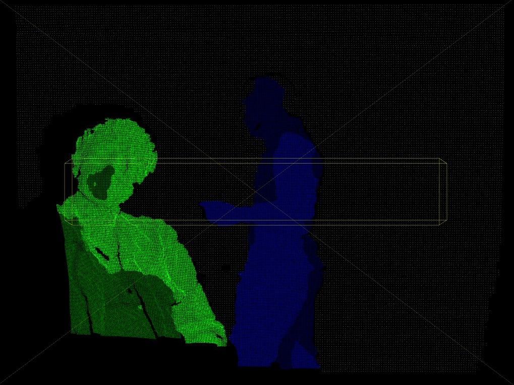
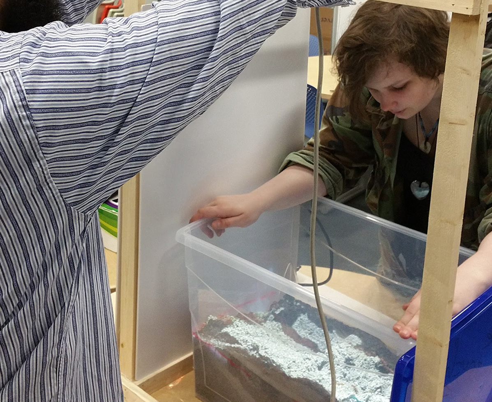

For this project our team was inspired by UC Davis and their Augmented Reality (AR) Sandbox, a sandbox that projected an elevation map of the sand, and reflected changes in real-time. We wanted recreate this concept, and build upon it with fish that would swim in the water of the elevation map.
A video of the original UC Davis AR Sandbox project.
As primary coder, I programmed a large majority of the project. I also helped lead the group throughout the term, organizing meetings, and asking for help with other tasks.

One of our kinect tests, where I was able to add color to specific depth ranges
Our team started immediately, and began with testing with the Kinect. We were able to add color to specific depth levels, and captured an image of our progress.
A Sudden Halt
At the following meeting, the program stopped working. The code wasn’t modified, and it ran perfectly before. The project went to a halt. I tried the program on different computers, reinstalling the appropriate drivers, back tracked to previous versions, and reached out to forums online.
My post to the Processing Forum, in attempt to solve our roadblock.
I found out that the Kinect’s Infrared Sensor was not turning on, even when plugged in. Based on my research, I determined that we needed a new power supply. After testing with a new cord, the program ran successfully and we finally moved forward.
Creating the Fish and the Rig
For the fish, we needed to be able to add, select, remove, and change the fish’s color using the Arduino Uno and sensors. I asked my team members to program the foundation of the arduino portion, while I programmed the fish. Once we built the rig that held everything together, our project was complete.
A schematic of our arduino implementation. The slider sensors controlled the RGB color values, while the touch sensors selected, added and deleted the fish.

My team member (left) and me (right) working on aligning the projector on the rig.
Results
We presented our project to our instructors, receiving perfect marks. It was also showcased at the SFU Surrey Open House in March of 2016. Some improvements I would make would be a more sturdy rig, use kinetic sand, polish its appearance and replace the touch sensors with push-buttons.